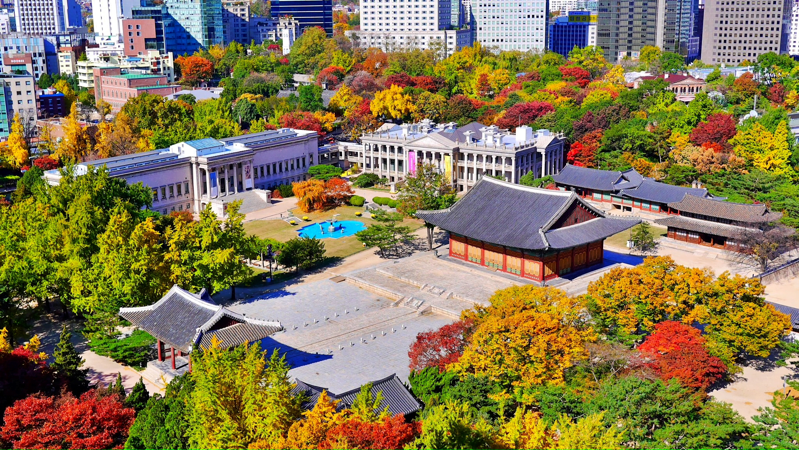
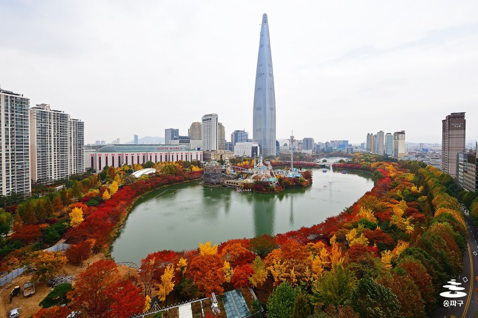
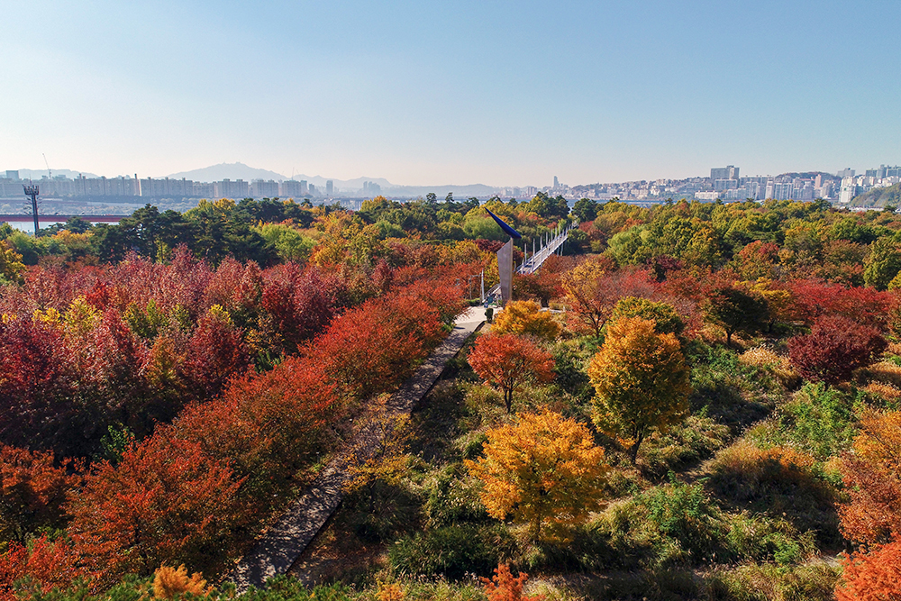

빈티지 카메라 소개빈티지 디카 기종소개 빈티지 디카를 사용하기 위한 준비물 빈티지 카메라로 찍은 사진들 사진찍으러 가기 좋은 가을 단풍 명소
 |
덕수궁가을 단풍 명소로 덕수궁을 추천해드립니다. 덕수궁은 서울 중심부에 위치한 궁궐로, 가을에는 아름다운 단풍으로 유명합니다. 또한, 덕수궁 밖에서도 돌담을 따라 형형색색의 단풍나무가 이어져 있어, 산책하기에도 좋습니다. 덕수궁은 서울 중심부에 돌담을 따라 형형색색의 단풍나무가 이어져 있어, 산책하기에도 좋습니다. 덕수궁은 서울 중심부에 위치하고 있으며, 지하철 위치하고 있으며 1호선 시청역 4번 출구에서 도보로 약 10분 거리에 있습니다. 덕수궁에서의 가을 단풍 명소를 즐기시길 바랍니다! |
 |
석촌호수두번째 단풍 명소로 추천드리는 장소는 석촌호수입니다. 석촌호수는 서울 송파구에 위치한 호수로, 가을에는 아름다운 단풍으로 유명합니다. 석촌호수 주변에는 다양한 산책로가 있어, 가을 풍경을 즐기기에도 좋습니다. 주변에 롯데월드타워와 롯데월드 등 랜드마크가 위치해 있어 다양한 놀거리을 즐길 수 있습니다. 석촌호수에서의 가을 단풍 명소를 즐기시길 바랍니다! |
 |
서울숲뚝섬에 자리한 서울숲은 가을 은행나무가 아름답기로 소문난 곳입니다. 군락지가 아주 크지는 않지만 촘촘하게 들어선 은행나무가 한 곳에 노란 숲을 이루는 것이 이곳만의 매력입니다. 어린 자녀와 함께 나들이나 연인과의 데이트 장소로 추천하는 가을 단풍 명소입니다. 서울숲에 가는 방법은 2호선 뚝섬역 8번 출구에서 도보로 약 10분, 분당선 서울숲역 3번 출구에서 도보로 약 5분 거리에 있습니다. 서울숲에서의 가을 단풍 명소를 즐기시길 바랍니다! |